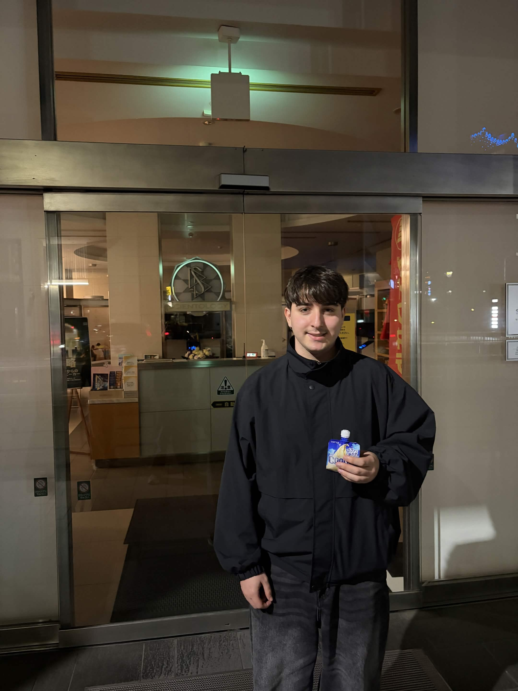

1st yeat ASIR student with an interest in technology,
arts and graphic design. Always trying to combine
different media to create my view on a curated enviroment.
Here's my GitHub repo, just in case you want to check it out!
GitHub